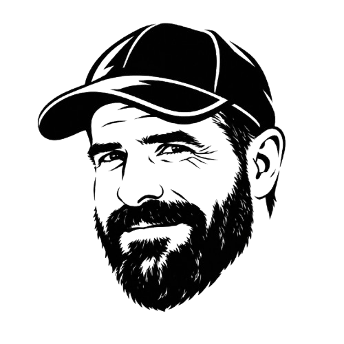

Pitch & Putt
TheIron Capi
Tarjetas, estadísticas, handicap y récords de Ferran Lobón en los campos de Catalunya.
Resultados
Tarjetas, estadísticas, handicap y récords de Ferran Lobón en los campos de Catalunya.
Resultados